Description:
Duration of the film: 49 minutes.
As Libya recovers from the effects of the 2011 conflict, there are wounds that have not yet healed.
On the International Day of Missing Persons, thousands of Libyan families still do not know what happened to their relatives who went missing due to the conflict and the actions of the former regime.
The definition of enforced disappearance as stated in the Rome Statute establishing the International Criminal Court is “the arrest, detention or abduction of persons with the authorization of, by or with the support of a State or political organization, followed by a refusal to acknowledge the deprivation of liberty or to provide information about the fate and whereabouts of those persons, with the intention of deporting them.” "from the scope of the law's protection for long periods of time."
 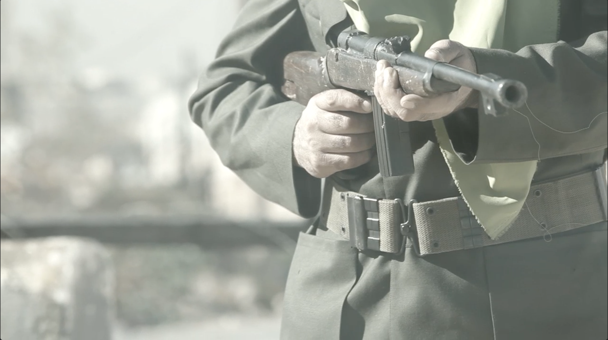
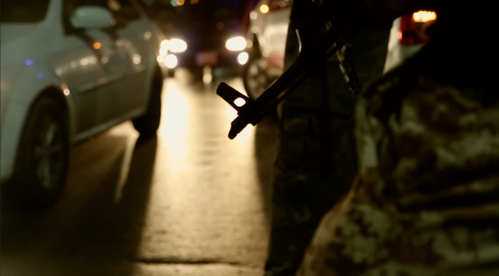
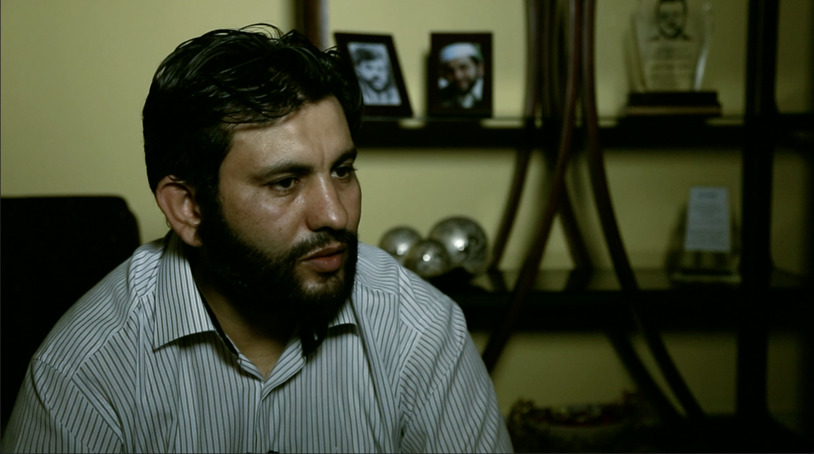
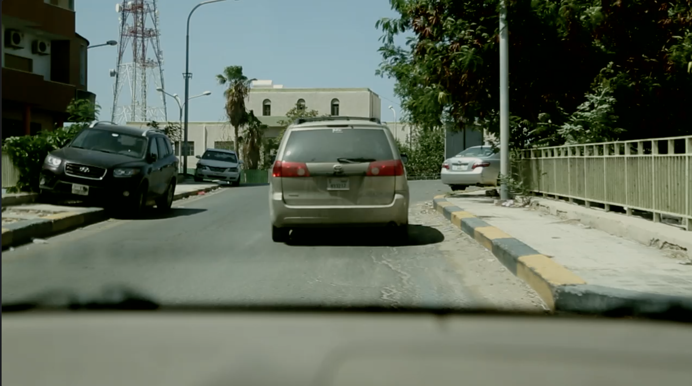
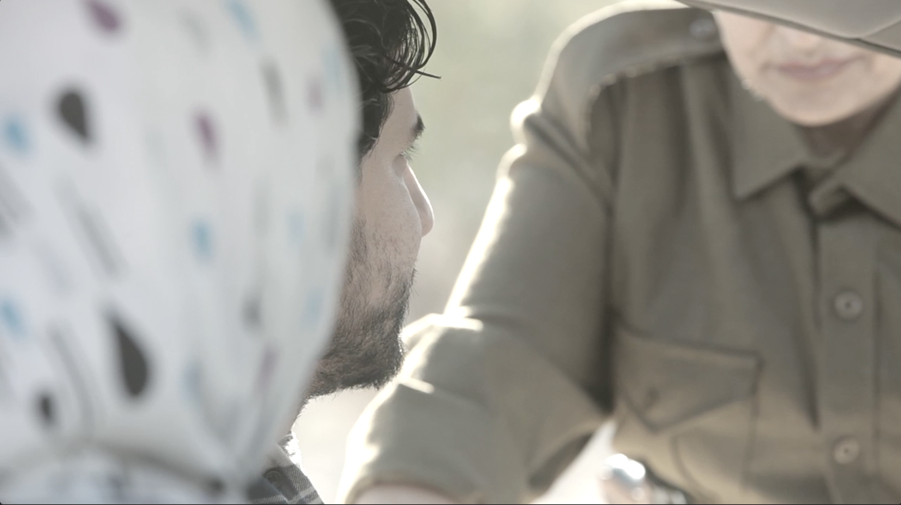
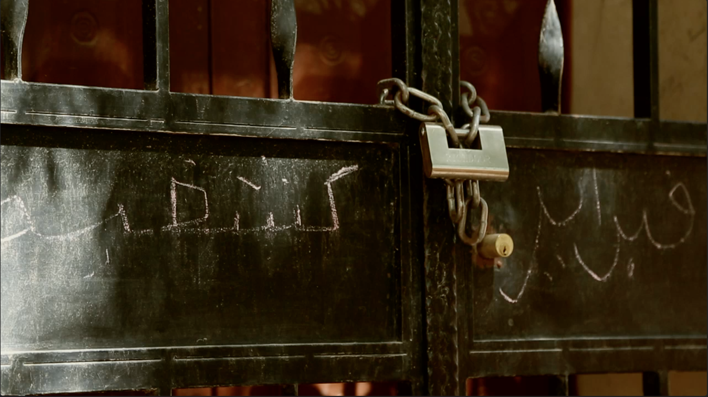
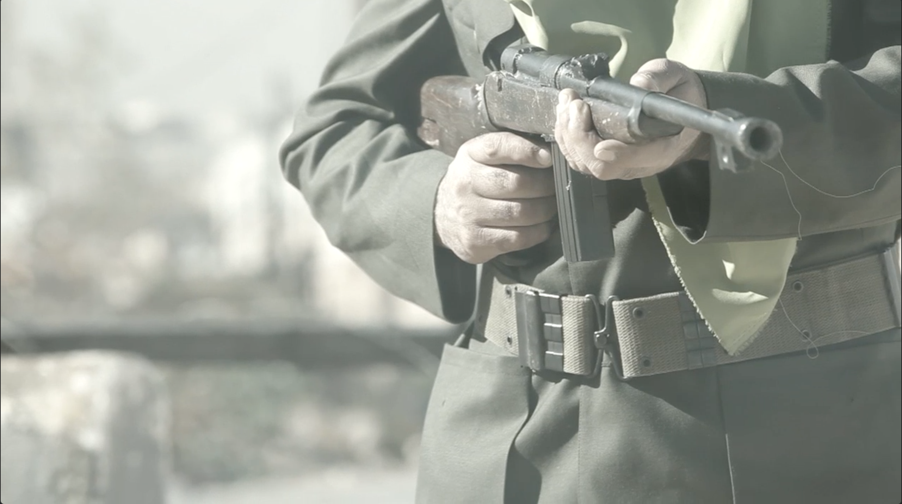
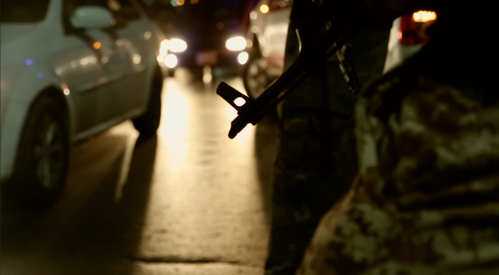
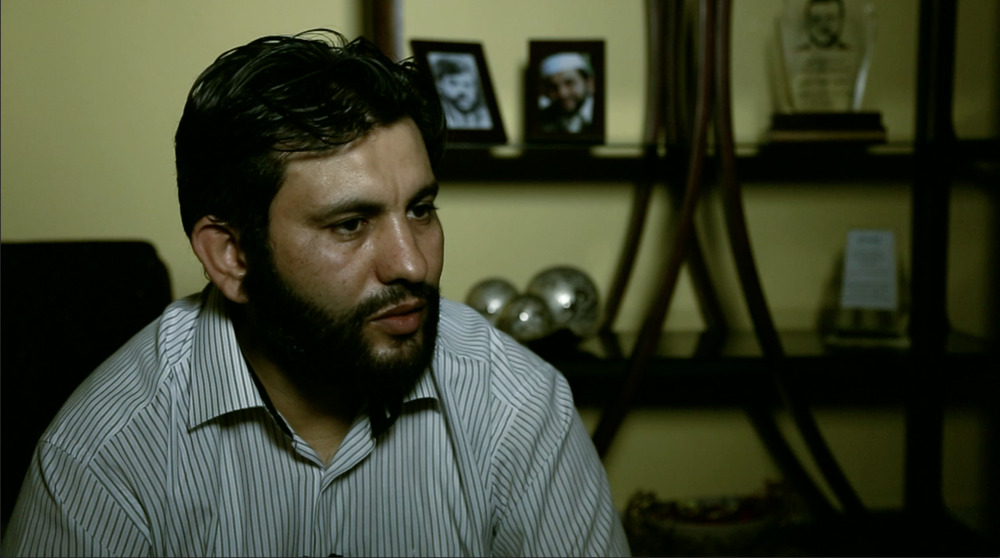
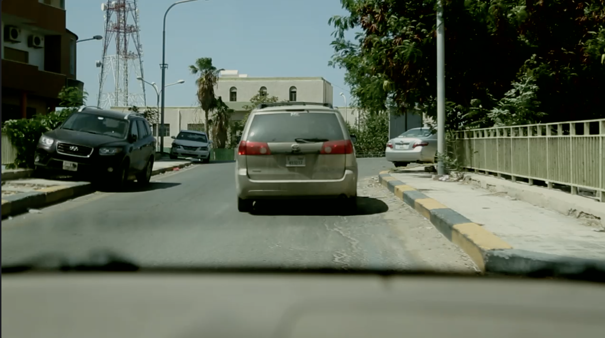
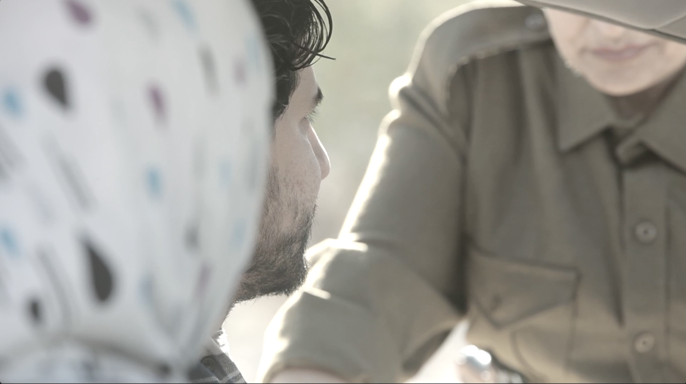
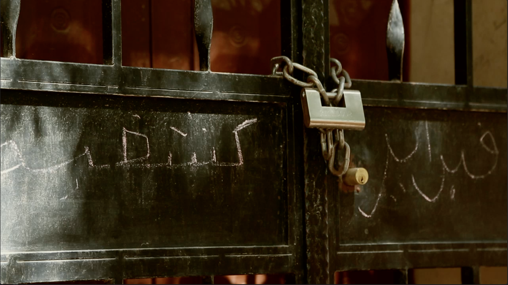